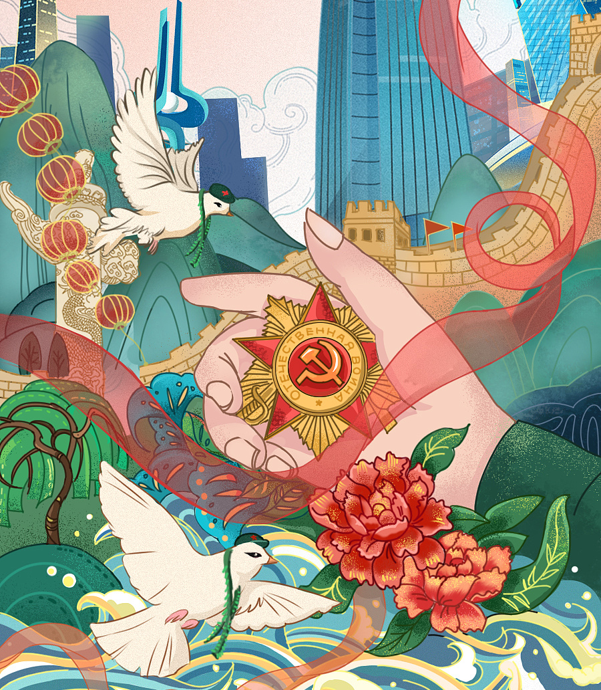

十一届三中全会
改革开放精神

希望工程
救助贫困地区失学少年

北京申奥成功
证明了中国的实力

中国战胜新冠病毒
全国人民齐心协力
十一届三中全会
全会认真地讨论了“文化大革命”中发生的一些重大政治事件，也讨论了“文化大革命”前遗留下来的某些历史问题。会议肯定了1975年邓小平受毛泽东委托主持中央工作期间各方面工作取得的很大成绩， 肯定了他和中央其他领导同志对“四人帮”干扰破坏进行的斗争，肯定了1976年4月5日天安门事件的革命性质，决定撤销中央发出的有关“反击右倾翻案风运动和天安门事件的错误文件”。 把党和国家的工作重心转移到经济建设和社会主义现代化建设上来，实行改革开放的伟大决策；形成了以邓小平为核心的党中央领导集体。
香港回归
江泽民说，历史将会记住提出“一国两制”创造性构想的邓小平先生。 我们正是按照“一国两制”伟大构想指明的方向，通过外交谈判成功地解决了香港问题，终于实现了香港回归祖国。江泽民向中英两国所有为解决香港问题作出贡献的人士，向世界上所有关心和支持香港回归的人们表示感谢。 向回到祖国怀抱的600多万香港同胞表示亲切问候和良好祝愿。

北京奥运会
2008年上半年，奥运场馆测试赛陆续进行，包括手球国际邀请赛、举重中国公开赛、轮椅篮球国际邀请赛等各项赛事。 3月24日，希腊赫拉神庙遗址，北京奥运会圣火取火成功。3月31日，奥林匹克圣火抵达中国首都北京。 中共中央总书记、国家主席胡锦涛在仪式上亲手点燃圣火盆，并宣布北京2008年奥运会火炬接力开始。 4月2日，北京奥运会火炬接力第一站传递活动在哈萨克斯坦阿拉木图举行。 5月4日，奥运圣火从我国三亚启程，开始境内传递。5月8日，北京奥运圣火顺利登上世界最高峰珠穆朗玛峰。7月27日，位于奥林匹克公园内的奥运村开村。 8月8日，点燃北京奥运会主火炬，奥运会开幕。

中共十九大
新时代中国特色社会主义思想是全党全国人民的行动指南和思想武器。报告令人振奋地指出：二十一世纪中国的马克思主义一定能够展现出更强大、更有说服力的真理力量！ 社会主要矛盾历史性新变化：已转化为“人民日益增长的美好生活需要和不平衡不充分的发展之间的矛盾” 在过去很长一段时间里，对中国社会主要矛盾的论述均为“人民日益增长的物质文化需要同落后的社会生产之间的矛盾”。十九大报告提出，我国社会主要矛盾已经转化为“人民日益增长的美好生活需要和不平衡不充分的发展之间的矛盾” 目前人民对美好生活需要，已不仅对物质文化生活提出了更高要求，而且在民主、法治、公平、正义、安全、环境等方面的要求日益增长；我国社会生产力水平总体上显著提高，更突出矛盾是城乡、区域、收入分配等存在的不平衡不充分等问题， 这已成为满足人民日益增长的美好生活需要的主要制约因素。社会主要矛盾发生变化，关系全局、影响深远，这对党和国家工作提出了许多新要求。 报告特别指出，社会主要矛盾的变化并没有改变我们对我国社会主义所处历史阶段的判断，我国仍处于并将长期处于社会主义初级阶段的基本国情没有变。 新的奋斗目标：从全面建成小康到社会主义现代化强国
中国共产党
中国共产党（英文名：the Communist Party of China，简写CPC），简称中共，创建于1921年7月23日 ，历经多年国共内战，率领中国人民解放军打败中华民国国军，并在1949年于北京建立中华人民共和国。 1949年10月至今为代表工人阶级领导工农联盟和统一战线，在中国大陆实行人民民主专政的中华人民共和国唯一执政党。